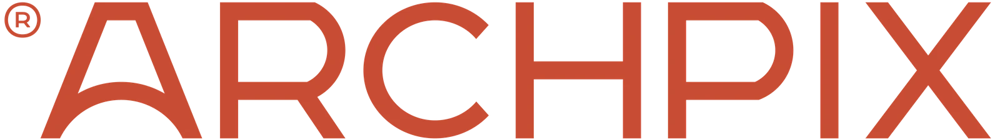
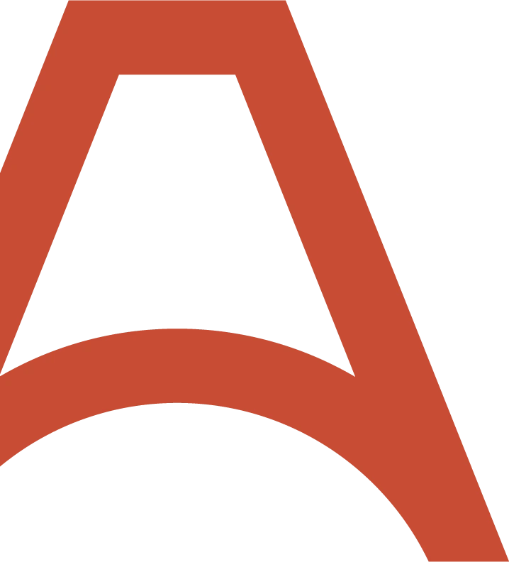
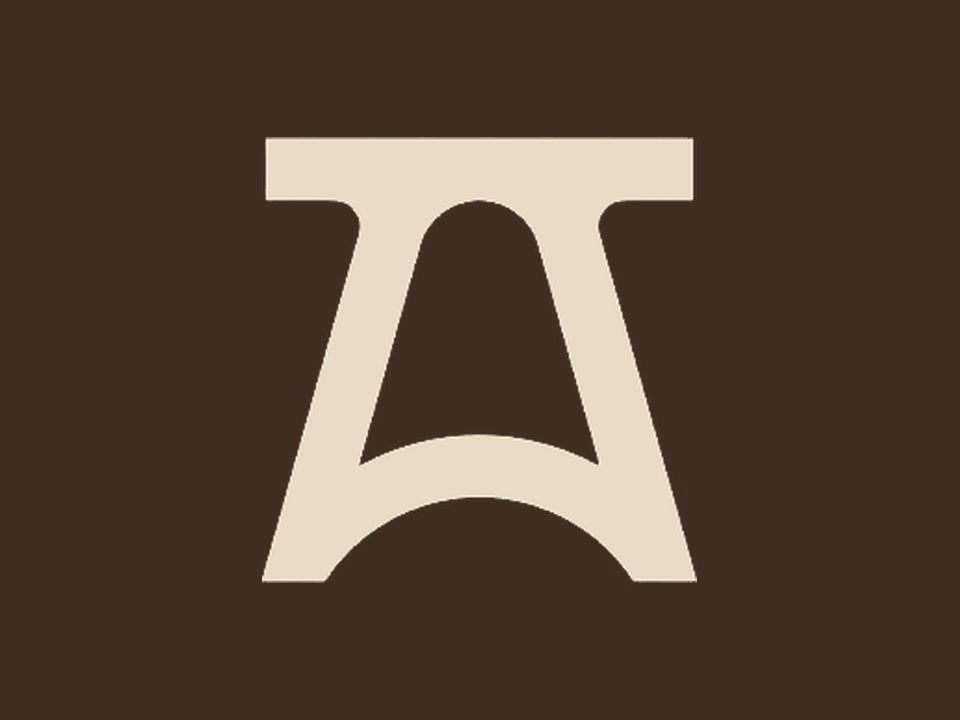
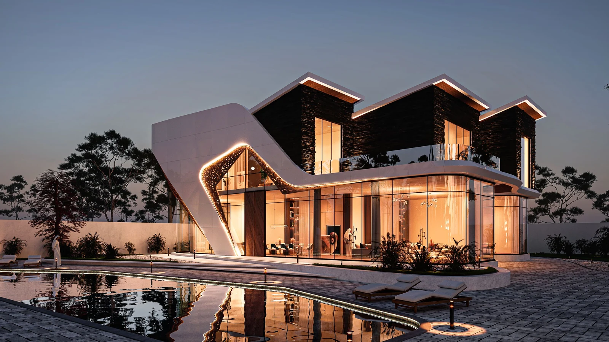
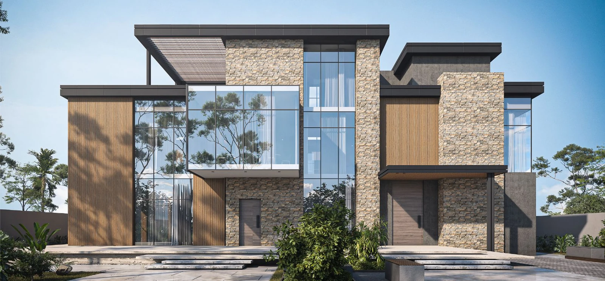
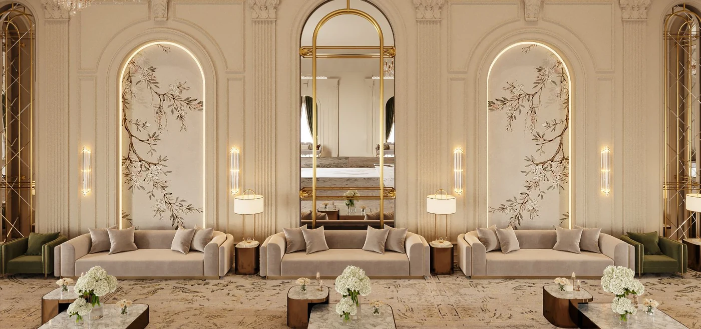

We design a world where every detail tells your story.
Structure, worn warmly
An engineering consultancy rebranded around one structural idea: the oldest load-bearing form in architecture, the arch, set inside the first letter of the name. Terracotta clay, deep brown and cream keep the engineering warm; the letterforms keep it exact.
01 · The wordmark
Seven caps, one arch
The wordmark is a heavy geometric sans in one weight and one gesture. Six letters stay disciplined; the seventh, the opening A, replaces its crossbar with an arch that springs from both legs. That single substitution carries the whole practice: engineering that holds weight, drawn as letterform.


The arch is the argument. An arch converts load into compression and spans open space without a beam. Putting it where the A's crossbar belongs turns the initial letter into a structure under load, and registers the mark with the ® it carries. Our reading of the construction, not the designer's own account.
02 · The mark
The A, lifted off the line
Pulled from the wordmark, the arched A stands alone as the brand's small-space signature, set in cream on ink or on the deep brown plate. It reads as a letter at first glance and as an elevation drawing at second, which is exactly the register an engineering consultancy wants.


03 · Color
Clay, timber, bone, ink
The palette is drawn from building material rather than from screens: fired-clay terracotta as the single brand color, a deep timber brown, the bone cream of the mark, and near-black ink for type and night photography. Values sampled from the brand's published assets.
04 · Typography
Engineered, not decorated
The wordmark's letterforms are custom, but the brand's working voice is IBM Plex Sans, the family its own site ships in full. Grotesk structure with engineered details, it sits naturally next to drawings, schedules and specifications.
Display · semibold, tight
IBM Plex Sans semibold at display sizes, sentence case, close tracking. Headlines read like drawing titles: factual, front-loaded, calm.
Body · regular, open measure
IBM Plex Sans regular at reading sizes with a generous line height. The same family carries proposals, site reports and the website.
05 · On screen
Build Your Own World

The rebrand launched with a signature campaign, Build Your Own World, and a brand film that aired as a TV ad on Abu Dhabi TV in Ramadan 2025. The film builds the brand's promise around one character: the client, standing inside the world the practice designed for him.
In this library: the 76-second brand ad film plays in the Highlights viewer, and the 16-second character cut frames the campaign's central idea. Watch in Highlights ↗
06 · Imagery
Dusk, stone and stillness
Project photography favors the hour when architecture turns to silhouette: villas at dusk, stone and glass in daylight, interiors held still. The arch returns in the framing itself. Images from the brand's own site.



Scope notes
- Documented on this page: the wordmark and its construction, the standalone mark, the working palette, the type system, the launch campaign and film, and the imagery direction.
- The wordmark, mark, plate and photography are the brand's own published assets, taken from its live site; no original vector files exist in the documented material.
- Colors are sampled pixel values; names like Terracotta and Bone are descriptive, not official brand names.
- The supporting type family is identified from the brand's own site stylesheets, which self-host IBM Plex Sans; the specimens on this page are typeset in that family.
- The reading of the arched A is our study of the published artwork, not the identity designer's own account.
- The campaign line "Build Your Own World" and the Ramadan 2025 Abu Dhabi TV airing are documented in the PR campaigns section of the portfolio.
- Social content for Archpix is documented only within the recorded work window, February 10 to August 21, 2025; no metrics are shown for this brand.